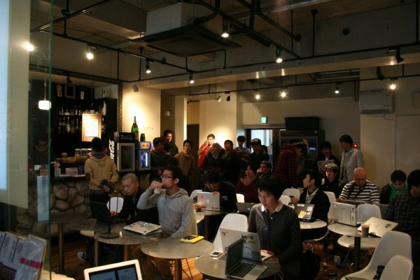

RegionalRubyKaigi レポート (34) 福岡 Ruby 会議 01
RegionalRubyKaigi レポート 福岡 Ruby 会議 01
はじめに
福岡でほぼ隔週で開催されている Fukuoka.rb のメンバーの @Spring_MT が中心となって、福岡での Ruby 会議が開催されました。 福岡では 2008 年に「九州 Ruby 会議 01」が開催されていますが、それ以来 4 年ぶりの開催となりました。 
- 開催日
- 2012 年 12 月 1 日 14:00 〜 18:00
- 開催場所
- GuildCafe Costa
- 主催
- @Spring_MT

- 後援
- 日本Rubyの会、GaiaX、10xlab
- 公式タグ・ Twitter
- #fukuokark01
- 福岡Ruby会議のtweetまとめ
DCI: Let the code do the talking (招待講演)

&##35;RubyFriends の紹介に始まり、福岡ではなかなか聞くことが出来ない Ruby 界隈の最新事情を話していただきました。
ソフトウェアはどこにあるのか、という哲学的な問題提起に対し、「ソフトウェアは頭の中にあり、ソフトウェア開発とは、エンドユーザーのメンタルモデルをソースコードとして表現すること」と定義し、2012 年後半に Rails 界隈を賑わせた DCI についてお話しいただきました。
「Rails のほう向いて仕事しちゃいけせんよ、ユーザのほう向いてください」という言葉はとても心に響きました。
Enumerator::Lazy の使いかた
: 
- 発表者
- 資料
Ruby 2.0 の新機能紹介を PB memo の著者の @nagachika さんに行っていただきました。 Yokohama.rb で一度発表された内容に一部追加した内容の発表となりました。 会議当日はまだ Ruby 2.0 はリリース前で、Module#prepend や消えるかもしれなかった Refinements についても説明していただきました。 メインの Enumerator::Lazy に関してはライブコーディング形式で解説していただきました。
初心者エンジニアのシステム構築失敗談
: 
この部分は @Spring_MT が書いています。
今やっているプロジェクトのアプリ構成の遷移のお話をしました。 これがベストではないとおもっていますが、チームの中で考えた今のベターな構成だと思ってます。 今回はユーザーの入力値の validation を行う場所として controller を選びましたが、ユーザーの入力値の validation が controller の責務かというとちょっと違うかなあとも思います。 じゃあどこがベストなのと突っ込まれると答えられないですが。。。。 懇親会で、controller で validation するというよりは、ユーザーの入力値の validation を ActiveRecord とは別に行い、validation を行う場所として controller を選んだというほうが良さそうとインプット頂き、確かにそうだなあと思いました。
Sencha Touch の本を書いたよ
: 
- 発表者
- 資料
- 発表資料はないですが、参考資料はこちらSencha Touch でのクロスドメインな JSONP 通信
@kis さんは会議直前に本を出版された Sencha Touch について。 スライドは事前に用意せず、その場でスライドを作っていく斬新なスタイルでした！ Sencha Touch でクロスドメイン通信をする話をしていただきました。
Ruby 2.0 の Bitmap Marking GC って美味しいの？
: 
@wats さんも @nagachika さん同様に、Ruby 2.0 で導入された Bitmap Marking GC についてお話いただきました。 シンプルな Mark & Sweep 方式から Bitmap Marking GC へと変更されることで Unicorn のメモリ消費量減少が見込まれることなどをお話しいただきました。
LT
その後以下の 8 名の方にライトニングトークをしていただきました。
- Hiroto Imoto - 新卒研修で初めて Rails 開発をしたときに感じた事
- Koichi Saito - Rails 高速化〜 isucon を題材にして〜
- Manabu Matsuzaki - 仕事で Ruby を使う為にやった事あれこれ
- @ayato_p - Java プログラマが Ruby に惚れたら
- Shigeichiro Yamasaki - Ruby で フィジカル・コンピューティング
- @kiwanami - 非 Web 系会社での Ruby 適用事例いろいろ
- @yotii23 - RailsGirls と手榴弾とわたし
- @kazuph - みんなで ProjectEuler in Ruby
様々な分野からの発表があり、盛りだくさんの内容となりました。
普段 Web 系の人から Rails の話を聞くことが多かったので、フィジカル コンピューティングや JRuby の話は新鮮に感じられました。
特に山崎先生 (Shigeichiro Yamasaki) が発表された Ruby を使ったフィジカル コンピューティングの事例はエキサイティングな内容でした。mruby ではなく、MRI を使っているのは驚きでした。GC のタイミングをずらすなど、かなりパフォーマンスチューニングもされており、Ruby の違った側面が見られてとても参考になりました。
さいごに
福岡の人の発表が多く、また様々な分野の方に発表して頂けたこともあり、色々な Ruby の使い方が紹介されました。Fukuoka.rb では Rails の話題が多く出ていたこともあり、Rails の発表がかなり多くなるのではと思っていたのですが、いい意味で予想が裏切られた形になり、福岡ならではの RegionalRubyKaigi になったのではないかと思います。
本当にさいごですが、福岡 Ruby 会議 01 の参加者の皆様に百万の感謝を
Thanks a million for all Fukuoka Regional RubyKaigi participants !
Fukuoka.rbとは
修羅の国でだいたい毎週木曜日に Ruby を触ってるのんべえの集まり。どんな言語をやっていても歓迎です！ https://www.facebook.com/groups/fukuokarb/